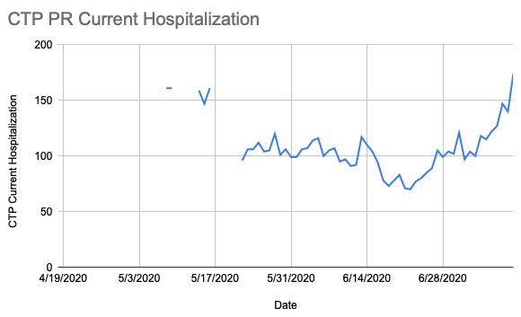
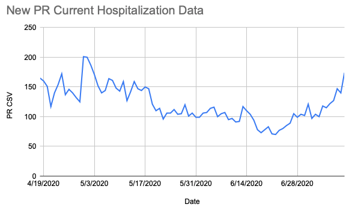

[PR] Historical Puerto Rico hospitalizations data
State or US: Puerto Rico
Describe the problem
So, on Thursday (July 9) the number of COVID-19 hospitalizations in Puerto Rico climbed to 147, prompting a leading local paper to publish a story pointing out that, according to the data they had, this was a record high:
- “Record patients: hospitalizations for COIVD-19 increase to 147” El Nuevo Día, July 9, 2020.
This seemingly didn’t sit well with the Secretary of Health, who responded by saying that his department’s records refute this and that there were 201 hospitalizations on April 30:
And as part of this, he also shared a table of historical hospitalization data with some journalists. It goes from April 18 to July 9, and also breaks the totals down by region:
- https://twitter.com/angelicaserran0/status/1281256666881802241
- https://twitter.com/RobbyCortes/status/1281536898230558720
I have dutifully transcribed this data into a CSV, and used a spreadsheet to check that the regional totals add up to the listed totals:
Thank you yet again @sacundim! Your CSV made this really easy for me to check against our numbers. All our recent data matched, just a discrepancy or two around the edges of our gaps. And of course this fills in a vastly better picture of the “first wave” than we had before.
Our existing current hospitalization data: 
Fixed data: 
Details, including before/after of States Daily